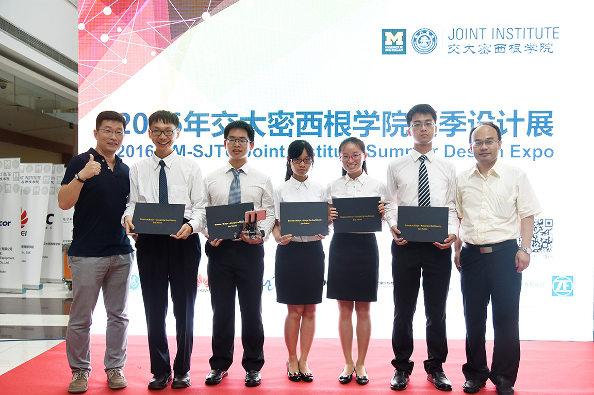

Low Cost SLAM Realization on Smart Phone
- Shanghai Jiao Tong University (Senior Capstone Design)
- Qinyue He, Zhuohe Liu, Shiyi Qian, Zhentao Xu, Shupeng Wei
- May 2016 - Aug. 2016
- Sponsored by Huawei Technologies Co. Ltd.
- Developed an Android application that ran on a Huawei P9.
- Built a bluetooth robot car and a test site to benchmark the performance of SLAM using the application.
- Awarded the best of the five groups from that year by Huawei, and the Sliver Award in UM-SJTU JI 2016 Summer Design EXPO.
Java



Force Gauge for the Removal of Epidural Catheters
- University of Michigan (Senior Capstone Design)
- Changqi Dai, Adena Leibbrand, Zhuohe Liu, Jordan Sykes, Tsz Kwan Yim
- Jan. 2016 - Apr. 2016
- Developed an add-on single-use mechanical gauge to indicate internal force of the catheter and prevent its breakage.
- Overhaul using Bootstrap framework in Dec. 2023.


Computational Modeling of Closed-loop Peripheral Nerve Block Based on Halorhodopsin (NpHR)
- University of Michigan (BME517 Neural Engineering Course Project)
- Suseendrakumar Duraivel, Joseph Letner, Zhuohe Liu
- Apr. 2016
- Built a multi-compartment neuron model in MATLAB that simulate NpHR's influence on action potential propogation.
- Explored the inhibitory effect of NpHR upon changing of light intensity, stimulation position and size, etc.
- Examined briefly the possibility of on-demand close-loop nerve block with electrical signal input and light inihibition output.
🔗 Final Presentation Slides (pdf, 1.61 MB)
MATLAB
Facial Electromyography as a Communication Aid and Method for Computer Interfacing
- University of Michigan (BME458/EECS458 Biomedical Instrumentation & Design Course Project)
- Zachary P. French, Zhuohe Liu, Danika J. Rodrigues, Walker L. Thompson
- Dec. 2015
- Built a LabVIEW system capable of controlling the mouse cursor and selecting words/letters using only 3 channels of facial EMG signals, intended for people with speech and/or dexterity difficulties.
LabVIEW
The Effect of Electrode Position on Human Biceps EMG Amplitude
- University of Michigan (BME241 BiomedE Undergraduate Lab Course Project)
- Melissa Lemke, Zhuohe Liu, Yiyang Lu, Yi Luan
- Apr. 2015
- Reassessed and cast doubt on the necessity of using the assigned electrode position to yield best signal.


Synthesis of Physalien and Its Application to Food Coloring
- No.2 Secondary School Attached to East China Normal University
- Mentors: Lan Ding[1], Huanxin Xu[2]
- Dec. 2010 - Mar. 2011
- Synthesized naturally occurring red pigment physalien from zeaxanthin and palmitic acid, replacing costly wolfberry extraction method, and to be used as an edible coloring and a nutritional supplement.
- Awarded the First Prize in The 26th Intel Shanghai Adolescents Science & Technology Innovation Fair.
- Honored Shanghai Future Science Star (1 of 10 awardees)